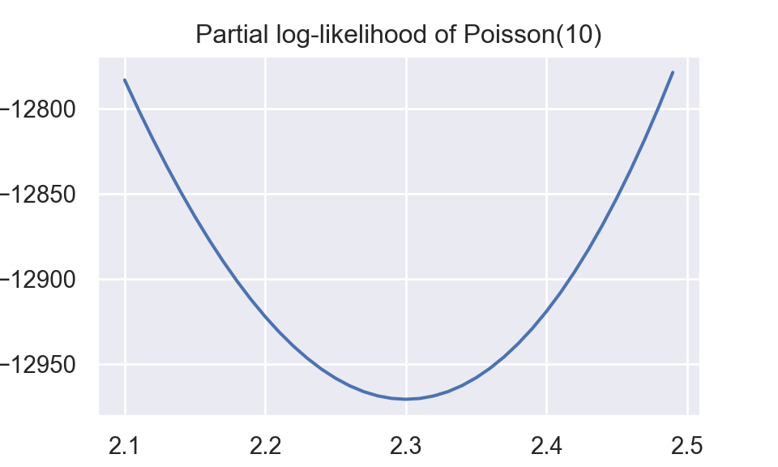

Here is a example about Newton-Raphson’s method in optimization. I simulated data from Poisson distribution. Under GLM framework, I compare MLE estimation by Newton-Raphson method and by statsmodels library.
Assume that \(Y\sim\text{Poisson}(10)\),
\[\begin{equation} log(E(y)) = \beta_0 \tag{1} \end{equation}\]
\[\begin{equation} E(y) = \lambda \tag{2} \end{equation}\]
From (1) and (2), \[\begin{equation} \lambda = e^{\beta_0} \tag{3} \end{equation}\]
\[\begin{equation} P(Y=y)=\frac{\lambda^{y} e^{-\lambda}}{y !} \tag{4} \end{equation}\]
Likelihood function is
\[\begin{equation} P(\mathbf{Y}=\mathbf{y})=\frac{\lambda^{\sum_{i}y_i} e^{-n\lambda}}{\prod_i y_i !} \tag{5} \end{equation}\]
Log-likelihood function is
\[\begin{equation} \ell(\lambda|\mathbf{Y}) = \sum_{i}y_i log(\lambda)-n\lambda-\sum_{i}log(y_i !) \propto \sum_{i}y_i log(\lambda) - n\lambda \tag{6} \end{equation}\]
Plot about partial log-likelihood function,\(\sum_{i}y_i log(\lambda) - n\lambda\),is shown below.
import numpy as np
import matplotlib.pyplot as plt
import numdifftools as nd
import statsmodels.api as sm
import statsmodels
np.random.seed(509)
y = np.random.poisson(lam = 10, size = 1000)
x = np.ones(1000)
def loglikelihood(x):
l = np.exp(x)
n = len(y)
f1 = (np.sum(y)) * np.log(l)
f2 = -n * l
output = f1 + f2
output = -output
return output
plt.figure()
plt.plot(np.arange(2.1,2.5,0.01),
loglikelihood(np.arange(2.1,2.5,0.01)))
plt.title("Partial log-likelihood of Poisson(10)")
plt.xlabel("lambda")
plt.show()
##approximation of first/second order derivative
def derivative(x):
output = nd.Derivative(loglikelihood)
return output(x)
def hess(x):
output = nd.Derivative(loglikelihood, n = 2)
return output(x)
##begin of newton-raphson
def newton(x0,tol=1e-10):
diff = 100
xold = np.copy(x0)
xnew = 0
i = 1
while diff > tol:
xnew = xold - derivative(xold)/hess(xold)
diff = np.sum(np.abs(xnew - xold))
xold = xnew
print("iteration:"+str(i)+" || "+ "betas:" + str(xnew))
print("change: {:.4f}".format(derivative(xold)/hess(xold)))
i = i + 1
output = {"beta":xnew, "sd":1/np.sqrt(hess(xnew))}
return output
output = newton(2.5)## iteration:1 || betas:2.318879946271993
## change: 0.0185
## iteration:2 || betas:2.300355926680922
## change: 0.0002
## iteration:3 || betas:2.3001822234658786
## change: 0.0000
## iteration:4 || betas:2.300182208377783
## change: 0.0000
## iteration:5 || betas:2.3001822083777355
## change: 0.0000output## {'beta': 2.3001822083777355, 'sd': 0.01001202164328345}We have \(\hat{\beta}\) and var\((\hat{\beta})\), that are identical with those from statsmodels.discrete.discrete_model.Poisson.
Theoretically, \(\beta=log(\lambda)|_{\lambda=10}=2.302585\)
model = statsmodels.discrete.discrete_model.Poisson(y,x)
model.fit().summary()| Dep. Variable: | y | No. Observations: | 1000 |
|---|---|---|---|
| Model: | Poisson | Df Residuals: | 999 |
| Method: | MLE | Df Model: | 0 |
| Date: | Sun, 19 Feb 2023 | Pseudo R-squ.: | 0.000 |
| Time: | 10:47:11 | Log-Likelihood: | -2538.4 |
| converged: | True | LL-Null: | -2538.4 |
| Covariance Type: | nonrobust | LLR p-value: | nan |
| coef | std err | z | P>|z| | [0.025 | 0.975] | |
|---|---|---|---|---|---|---|
| const | 2.3002 | 0.010 | 229.742 | 0.000 | 2.281 | 2.320 |